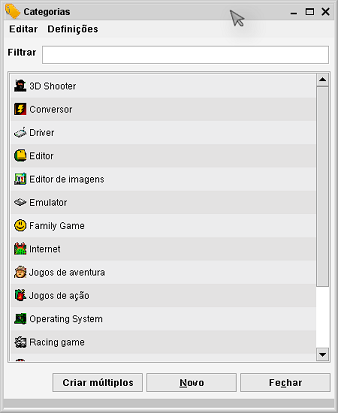

Gestão de itens de propriedade
Caminho de menu: > Gestão > Manter <nome>
O menu Gestão permite-lhe gerir os itens de propriedade, como categorias, países, e estados.
O resumo mostra todos os itens numa lista, ordenada alfabeticamente. Pode abrir um item e editá-lo.

Filtrar
Pode filtrar a lista introduzindo texto no campo ao cimo da janela. Os itens são imediatamente filtrados ao escrever.
O filtro procura por itens cujo nome comece pelo valor introduzido. Remover o texto mostra a lista toda novamente.
Criar múltiplos itens
Se quer criar múltiplos itens em simultâneo, clique em Criar múltiplos itens.

Para acrescentar uma linha a este resumo clique em Adicionar. Clique na linha e comece a escrever. Assim que tiver introduzido
a informação em todas as linhas clique em Gravar.
Os seus itens estão criados!
Abrir um item
Abra o Formulário de item com um duplo clique.
Aqui pode ver e/ou editar o item (dependendo dos seus direitos, definidos na segurança
e nas definições gerais).
Apagar um item
Se clicar com o botão direito num dos itens, pode optar por apagá-lo.
O item não pode ser apagado se estiver a ser usado por outros itens. Por exemplo, Se tiver um país atribuído a
três filmes, não o poderá apagar. O sistema avisa-o quando for necessário. Para o apagar, primeiro tem de
remover todas as referências ao item (veja o próximo parágrafo).
Apagar itens não atribuídos
Se a lista se tornou muito grande, poderá ser boa ideia remover todos os itens não usados (por exemplo, um estado que não
foi definido para nenhum item). Selecione Editar no menu e selecione Apagar não atribuídos <nome>.
Unir itens
Pode unir múltiplos itens num só. Esta ação é explicada aqui.
Itens/Referências relacionadas
Para ver como um item foi usado, abra-o e veja o separador Itens relacionados no
Formulário de item.
Definições
O menu Definições contém as opções Definições gerais de campos
e Definições do formulário de item.